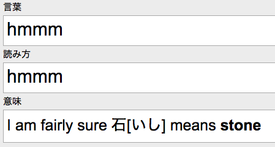

Anki & SRS
If you actually read or actively watch/listen Japanese for several hours every day (if you do, I hope you know what you’re doing with your life), feel free to be skeptical about Anki and SRS until you need it: until you realize you keep looking up a substantial amount of words you can’t seem to remember. In other words: if you’ve been studying for some time and you’re still not doing SRS — I don’t necessarily blame you. But! Ultimately, you will either give up on Japanese, or start doing SRS. So if you’re serious about this whole adventure, you might as well download and start using Anki now. Anki will also be your insurance in case at some point you take a vacation from Japanese: and the sooner you start putting things into it, the bigger that insurance will be. So, again — you better start now.
As you can see, at this point you are essentially writing your own language program: with words and grammar being taught in order of naturally encountering them in native writing. Pretty cool, eh? It may be time to start digitizing this custom dictionary of yours in order to make reviewing it less painful (you’re gonna wanna start doing it sooner or later). Why review? Because you’ll forget it otherwise. In fact, you’ve already forgotten most of what you looked up since you started Japanese. I recommend going with digital flashcards, preferably using the same shared database for your mobile and home devices (unless you absolutely don’t want that for some reason O_o). Myself and everyone I know are/were using a program called Anki for all our flashcards needs, so I can’t really say anything about other Space Repetition Software. I recommend looking up what Space Repetition is: it is more or less what Anki is built around, but you don’t really have to use the SRS component if you don’t want to. You do, though.
I should probably preface the following guide with saying that Anki is mostly necessary for learning Japanese and Chinese languages. If the language you are learning is spelled in phonetic alphabet (like, you know, most languages) and it can be actually read rather than decoded: you don’t really need Anki. Just go ahead and read, you lucky bastard!
So how does reviewing flashcards with Anki work? The idea is very simple. It will show you a card. It will make sure you remember it (short-term memory only, obviously). It will show it to you tomorrow. If you remember it — it will show it to you in 3 days. If you remember it in 3 days — it will show it to you in 5 days, and then in 10 days, and so forth. Gradually your memory of the word gets longer, i.e. stronger. At some point the interval will get too long and you won’t see the card for quite a while. You will fail a lot of those cards once they eventually come up. Every time you fail a card, its review interval resets and from there will grow slightly slower (so the cards you fail you see more often — makes sense, right?). However, when you fail a card with a long interval, its new interval will not be reset all the way to 1 day, but to something a bit longer: 3, 5, ever 10+ days, depending on how mature was the failed card.
You can totally figure out Anki yourself, but here are a few tips:
- Anki is free on Mac-Linux-PC and Android (and I think it costs something on iOS) but you can only format your decks on Mac-Linux-PC! So even if you plan on exclusively using Anki on your phone (and you can), make sure to set it up on a computer first.
-
Anki’s default flashcard formatting is way too small (makes especially little sense on mobile). You will want to set up a new deck and your own card type:
-
Small update and disclaimer: I‚Äôve actually been doing Anki again for the last 5 months because it‚Äôs 2021 as I‚Äôm typing this, and I couldn‚Äôt go back to Japan in 2020 as was planned, so I‚Äôve been doing all other kinds of garbage to kinda survive where I‚Äôve been stuck, so I haven‚Äôt been immersing all that much as of late. Remember the insurance part of being an Anki user? Yeah. So I am a bit lazy about taking new screenshots for this part: the ones used here I took after I thought I ‚Äúgraduated‚Äù Anki and before my return to Anki. So I didn‚Äôt have a deck at that specific moment. I am currently sitting at 6000+ cards and doing about 200 reviews a day, my deck is not called MAIN DECK and my interface is not in English üòâ I will now show you my old settings as an example of a starting point for a Japanese-learning Anki user: my current setting are actually not much different, but it doesn‚Äôt matter what they are anyway ‚Äî I am sure you‚Äôll come up with your own. However I did add a bit of a fun CSS gimmick for my deck that is not part of the following setting: I will demonstrate it later. You may like it.
-
click Add. make sure the type is Basic and it’s your deck;
-
click Fields. delete what’s there and create your own. you’ll probably need three:
•  言葉　(word)
•  読み方　(reading)
•  意味　(meaning)
-
Editing Font is literally just the font used in the previous window, not on the actual card. if you’re anything like me (and I know I am), just make it bigger for all three fields: 25-35. that’s all, you can close this window now.
-
in Cards you do the actual formatting of the card template. every card has two sides: front and back. you need to add the fields you’ve just created to the sides of the card template. 言葉 goes on the front, then it also goes on the back (or you can just type
{{FrontSide}}), and then separated by the<hr id=answer>tag goes 読み方 and 意味.
- when your Add Field, it adds inside a
<div>tag. if you don’t erase it, it will override the central Styling field. so I suggest deleting it; - Styling is the main default formatting for both sides of the card. if you want some elements to be styled differently, you need to do so inside the back and front fields (with
<div>of<span>tags, for example) — it will override what’s in Styling; - Without
furigana:in{{言葉}},{{読み方}},{{意味}}you won’t be able to add furigana to said fields, so feel free to add it to all of them (and not just{{読み方}}like I have on the screenshot). -
Cool, now when you know how to bend Anki to your will, if you sync this deck with the Anki cloud system and get it, say, downloaded onto your phone, you can add cards to it even on your phone and they’ll be in the proper formatting even tho you can’t really edit styling there. My styling looks like this on Mac:
- And like this on Android:
-
-
Boom. Now you can finally add a test card in the +Add window by filling in the “editing” fields. To have furigana over a kanji or word, type it inside square brackets right after the kanji or word (no space) like this: 仕事[しごと]. Unfortunately, Japanese brackets 「」 and 『』won’t work so you will have to switch to English input every time to add furigana:
- It is better to assign furigana to specific kanji of the word rather than to the entire word: it’ll not only look cleaner but will help you remember kanji readings. So 仕事 I would do as 仕[し]事[ごと] rather than just 仕事[しごと] ;
-
Another important moment. Furigana applies to everything after the brackets until either the previous brackets, the next
<div>, or the end of the card. So if you have a word with okurigana in-between kanji, say 贈り物, if you type 贈[おく]り物[もの], もの will go over り物 instead of just 物 :
-
To make sure this doesn’t happen put another set of brackets after り with english space inside of them like this: 贈[おく]り[ ]物[もの] :
-
You can do that not only to “rogue okurigana”, but pretty much anything. Including spaces. Useful when you have several kanji for the same word. For example, you could have a card looking something like this: 影
<japanese space>陰. And its 読み方 (reading) field would look like this: 影[かげ]<japanese space>[ ]陰[かげ]. And in 意味 (meaning) I would clarify that 影 and 陰 aren’t exactly the same thing:
- You can also just put english space instead of [ ] but I prefer the latter: depending on your system font a short english space can be much more difficult to notice than, you know, a [ ]. Makes it a lot easier to see what you are doing, which is helpful when you are doing long kanji compounds or sentences.
-
You cannot, however, put [ ] after English
spaceor you will end up with this:
-
But you obviously need to put something before 石[いし] otherwise the
spacebefore it disappears:
 -
To preview your cards: go to the main window, Browse, Whole Collection, click on the card, Preview. That is also one of two ways to review your cards in Anki without dealing with the SRS system:
-
The other, slightly less jenky way (?), is to click on your deck in the main window, then click Custom Study, Study by car state or tag, All cards in random order (cram mode). This will create a new deck ready for review that you can delete later:
-
To preview on Android, go to Card browser, long press a card, Preview:
- To create a custom study on Android, long press a deck, Custom study, Study a random selection of cards:
- Once you have spent enough time with Anki and understand how it works, you will start tweaking settings to your needs anyway. But in my opinion it’s never too early to address a few things in the deck options:
- It doesn’t make sense to have anything but 0 in New cards/day: you want to separate the actions of reviewing cards and learning cards. If you have anything in New card/day, Anki will randomly mix-in new cards with your reviews. That’s idiotic. Never do that. If Anki was a finished program, there would’ve beed a big fat obvious button somewhere saying Add New Cards to Queue. Maybe there is an add-on for that, I dunno. I just go to the options and set the amount of New card/day every time I want to study new cards, and once I’m done I go back and set it 0;
- Starting ease (controls how fast intervals are growing) of 250% is way too high in my opinion. Intervals grow to 4+ weeks way too fast, before you can remember most of them, so you’ll be “maturing” a lot of cards just to fail them in a month and start over;
- Everything else in my settings is pretty self-explanatory, so here are all of them.
- ESSENTIAL Anki add-ons:
- Batch Removal of Formatting. Because Anki is garbage. Make sure the config file includes tags
<span>and<font>. example:
STRIP_TAGS = ['span', 'font'] # list of html tags to remove
Never remove<div>tags — that’s how desktop Anki does line breaks.
Altho mobile Anki does line breaks with<br>for some reason. Probably because it was developer by different people. Yay open source. - A must fix for the stupid default card scheduler. Install and forget. Don’t even read what is does.
- Reset Ease. To get yourself out of ease hell. You’ll know what it is once you’re there, trust me.
- Batch Removal of Formatting. Because Anki is garbage. Make sure the config file includes tags
- When you copy and paste things into Anki — for some unknown reason it includes formatting, despite the fields of the Add window clearly being intended for pure text input. To paste into Anki without formatting, you need to use CMD+SHIFT+V. Standard Mac shortcut CMD+ALT+SHIFT+V for some unknown reason doesn’t work. I assume it’s CTRL instead of CMD if you’re on winflops (or on linux with winflops keyboard). Have I mentioned yet that there is a good reason why Anki is free despite providing an essential service to all language learners with free online storage? Yeah… For some reason the developer is completely disinterested in actually finishing it. If Anki wasn’t open source and add-ons didn’t exist: it would’ve been borderline unusable and competition would’ve destroyed it long ago. Even if it was free, without add-ons no one would’ve used it long term: everyone would’ve switched to something better at some point.
- You might’ve noticed that kanji are unreadably small in Browse. Unfortunately there is not a lot you can do about it, but you can increase the font a tiny little bit by going to Browse —> Card —> Options —> Browser Appearance —> Override font. I set mine to 15. Anything bigger breaks line spacing.
- I don’t recommend doing daily sentence SRS if you can spend the time you have for it on literally anything else in your target language.
I obviously recommend doing word cards, while ajatt&associates requires you to do sentence cards it order to be accepted into the cool 16 year-olds club. I… I am not a huge fan of sentence cards. Which makes me a mortal enemy of AJATT, and now I can never be friends with a bunch of zoomer weebs :-( My logic is very simple here: as long as you immerse — you’ll get your damn sentences, OK? Is it really that difficult to realize? Mining for sentences is just not worth the time investment (unless you have too much of it and literally no hobbies or interests): it takes a crap ton of time to make sentence cards. Or rather, it takes a crap ton of time to find “the perfect sentence” where there is only one word which you wish to learn surrounded by words that you know. Too much time. The redtube gurus though… they never had a problem with that, right? Well, of course it wasn’t a problem for them: coming across those perfect sentences happens way more naturally when you immerse 18 hours a day. Do you? So, while I do agree that doing sentence cards will give you good results eventually, I strongly believe that it’s not worth the time it takes to create them unless you have unlimited supply of it, i.e. your time is worth nothing. Concentrating on learning as many words as possible will give you better results: it will get you to the point of actually reading much faster (as opposed to just looking up words and calling it “reading”), which means you will faster get to the point of uninterruptedly comprehend what you read. And when do you learn, AJATT? C’mon, say it with me: when the input is comprehendible. The ability to read like a normal human being also means your are less interrupted by having to constantly look things up, which means less burnout, more enjoyment of the process, and more motivation to keep going. Do you think the AJATTers who “extensive-read” several light novels a day learn a lot from it? They are borderline just reviewing things they already know. It only works out in the end because they do it 120 hours a week. Cthulhu only knows how much faster some of those kids could’ve reached fluency if only they put a tad more thought into the process rather than just pure time and ego.
- Create as many cards as you can. If you’ve been studying the language for some time already, try to avoid basic things you already know by heart, of course. However. Are you sure you know how a standalone 紅 is read? Are you sure about how 春夏秋冬 is read? What about 九日 or 六日? Maybe not so basic after all. Everything you don’t know, as well as a good portion of what you think you know — create cards for it. I recommend keeping a separate browser window with jisho.org, opening each word you look up in a separate tab, and keeping that tab open until you create a card for it. At the end of some days I had 30 tabs open, other days it was 50 and even 80+ (especially when I bring in several days worth of tabs from my reading ipad). I’m not going to lie to you: it takes time to create cards for all these words. Not even close to 18 hours a day though. However do be careful: if you keep semi-passively immersing while working with cards, chances are you’ll be looking up stuff from said immersion, keep adding new words to your queue, and it can all become a never-ending cycle of violence that eats your entire day. Maybe shut the immersion off occasionally. Listen to some music. It’s good for you.
- Try to mostly create cards for words you feel like you’ll probably forget. Don’t spam your deck with every new word you encounter when you’re just starting out: as long as you keep immersing you’ll keep seeing common words anyway.
- Don’t use pre-made decks. I know it’s tempting. Don’t.
- I already told you to manually control the flow of new cards depending on your situation. For example, after getting to about 200 daily review you’ll start having days when adding 5 or even 0 new cards is a viable option if you already have 250 reviews tomorrow. If you are just starting out though, I recommend adding between 20 and 30 new cards a day. Anything below 20 is waaay too easy to false-positively remember (don’t quote me on this terminology) because the loop is just too short this way: you end up short-term-memory remembering™ all the cards in 5 minutes and then fail half of them the next day.
If you’re properly aggressive in your card creation, you will always have a new cards backlog. Mine was 2000+ at one point. That’s what happens when you immerse a lot — you end up seeing too many new words to learn them all, your daily reviews go above 300 and you now hardly even have any time for immersion. Or life. So what happens next is that you’ll be looking up words that are already in your deck (I mean, as new cards waiting to be learned) and discovering that when trying to create new cards for them (Anki will tell you that a card like that exists already). You have several options when this happens.- Option one: this word is obviously somewhat more common than the rest of the new cards you created around the same time: bump that card up to see it sooner. Right click on the card in the browser and choose Reposition. Make sure start position is 0 and shift position of existing cards is checked and press OK. The card is now #1 in the new cards queue.
- Option two: you realize that this word is actually really easy for you now. Maybe it consists of pretty basic kanji you’ve learned since you originally created this card. Or maybe you realize you actually know the word itself rather well: you just weren’t familiar with the spelling of it when you created the card, but it looks pretty straightforward to you now. Inject it.
Injection™ is when you skip the whole “new card” thing: you pre-graduate a card and its first review. So, for example, with my settings a card like that can immediately be sent 3 days into the future (GOOD), 4 days (EASY), or 2 day (HARD). Injection is a good way of trimming the new cards backlog while not effecting you reviews tomorrow — so it can be done even if you already have more than enough things to do tomorrow. You can easily inject 100+ cards (spreading them between 2, 3, and 4 days ahead) without affecting the next day, while doing 100 new cards would likely destroy your tomorrow. Obviously it can also be done for cards that you have just created: for example, if the word is truly new to you, but you know its kanji and the reading is pretty straightforward. To be honest, in cases like that you’ve probably already remembered the word more of less forever, but I wouldn’t blame you for creating a card for it. Obviously, a card like that can be injected right away. The downside of injection, however, is that if you fail a freshly injected card you will see it tomorrow (and its ease is gonna go down, of course, since you essentially failed a graduated card). Failing a freshly injected card is actually a pretty good omen of failing it quite a lot in the nearest future until you learn it, by which time its ease is gonna be six feet under. That’s when you find yourself in “ease hell” and use the aforementioned Reset Ease to get out of it.
To inject™ a card you right click it and choose Reschedule —> place in review queue, 0, 0. OK.
- The secret Anki technique I mentioned before going over basic formatting options: putting the answer into a spoiler. For some reason this works not exactly how it should on mobile, but it’s even sorta cool. Just add this to Styling (in Browse —> Cards):
.answer {
background-color: grey;
color: grey;
}
.answer:hover {
background-color: white;
color: black;
}
- And
class = ‘answer’to the opening<div>tag for Back Template. The tag should look something like this:
<div class = 'answer' style='font-family: arial; font-size: 30px;’>{{意味}}</div> - This should put the “meaning” part of the card’s back side into a spoiler. For some reason on mobile it puts the entire back side into a spoiler, but it doesn’t really change anything because of how spoiler text works on mobile (you’ll see). Delete the part you added to Styling if you don’t want this highly sophisticated piece of software engineering.
- And
- To the future, highly advanced you: for some stupid reason EASY and HARD buttons are missing from review ahead (through Custom Study), so by the time you’re confident enough with Anki to use the review ahead function and make your life a bit easier on certain days… using it will actually hurt you in the long run: EASY and HARD buttons get extremely important after a few months with Anki. I consider this a bug, to be honest. Maybe it’ll be fixed one day. Maybe it’s fixed already. Or maybe never. It’s Anki we are talking about.
- To the future, advanced you: stop failing every card because you can’t recall its meaning. If you can comfortably read a word but can’t quite remember what it means precisely — don’t fail that card. Recalling reading is the most important part anyway because that’s what allows you to painlessly look the word up when needed. Meaning, however, not only can but is in fact even better be figured out from context. Chances are it will be impossible for you to remember the meaning of this cursed word without context anyway.
Also, most words have several pretty different meanings, but you will most likely remember only one. Which means without understanding context there could be situations where you can’t understand the word you (think you) know, or you could understand it incorrectly. Knowing ±1 meaning in a vacuum will not let you master a word. Even if the word has only one use, its meaning can probably be described by a few dozen English words. So only experiencing the word through many instances of context will give you its full meaning. Don’t obsess over “oh my god I can read this word but I totally forgot what it means! wtf is wrong with me?!”. Not much is wrong with you, actually. At least not in the context of this specific situation. It’s a totally normal thing when you learn a large volume of words fast. Be thankful to your brain for the ability to not only recognize the word but even read it: this ability is worth a lot, even if the inability to recall meaning is annoying af. You don’t need the meaning right now: this is just a word, not a complete thought (aka sentence). Give yourself a chance to deduct the meaning once you see, or maybe even hear, a sentence with this word. Consider pressing HARD more often on such cards (rather than failing them, I mean). Even if you don’t see this word in your immersion until its next review, you’re giving your brain a more relaxed chance to remember the meaning of it and allowing more new card to be learned instead of relearning this leech.
Giving your brain a chance + learning new words > being anal about re-learning old words.
You could say “dude, feck off with that: it’s just one word, let me fail it”. Yes, it is but one word, but you’ll fail and re-learn hundreds of cards like that, over thousands and thousands of failed reviews. In fact at some point you’ll be failing dozens of mature cards a week, if not a day. Say you have 200 reviews a day: with optimal retention of about 75-80% it means you’ll be failing about 300 cards a week, which is a whopping 1200 cards a month. It’ll then take 2-3 reps for each card to get the interval back to over a month (provided you haven’t failed its first attempt at re-graduation and if the ease wasn’t already in the gutter). So you are looking at approximately 2500-3500 reps a month that you make yourself do simply by failing cards. Let’s say 25% of the cards you fail you do because you couldn’t recall the meaning: that costs you 800-900 reviews every month. Well, on average it takes about 3 reps to graduate a card. That’s about 300 additional new cards a month you could be adding if you simply stopped failing those 25% and gave your brain a fighting chance. I dunno about you, but to me learning 300 additional cards a month sounds pretty sweet. And if 25% sounds a bit much — just you wait, you’ll get there. However, even if it’s less than 10% you are still looking at graduating something like 100 additional cards a month. Still not bad. Do you want to rob yourself of that? You might say the newly graduated cards will then start taking up space in your reviews, just like the failed/re-graduated cards were, so in the end you may end up with even more reviews this way… But not really. Well, maybe a little bit. The point is the approach I’m proposing will provide you with a fresh and healthy amount of new cards in your reviews, rather than the doom and gloom of rotting in the swamp of same old failed re-re-re-re-graduated cards you don’t stands a chance remembering anyway (for which you need either context, or knowing more simpler words using same kanji. probably both). Even resetting ease will not save you from that rot if you keep being 100% anal about memorization. And yeah I sense the “gotcha!” moment coming from the sentence cards purists. No, sorry, no gotcha for you. Even if 50% of the card you fail you do because they require context to be remembered, that is 50% of 20-25% retention failure, which is 10-12% overall. 10-12% words that you can only master thru context? Yeah, I’ll take that, thank you. Anyone would have a fantastic time immersing by reading and watching stuff with subtitling while understanding “only” 90% of the language:
  •  it’s not a giant ass pain that way;
  •  you are actually reading, practicing comprehension, and learning things from context rather then spending 99% of the time just looking up words you can’t even read without furigana, let alone understand;
  •  it will be actually enjoyable therefore you will want to do it. trust me, no matter what your levels of personal motivation and interest in Japan are, the tedium of mining is unescapable.
So no, sorry: “supercharging your immersion with learning as many words as you can by memorizing literally every single new thing you see until you don’t have to flip through half a dictionary (metaphorically, hopefully) to read most sentences you encounter” is still more productive than “brute forcing your way through language with extensive immersion” (which only worked for people who had 18 hours a day to dedicate to it). Good for them, of course, and bless their hearts. I’ve even been there, with English. But now I’m old, have responsibilities, and learning a much more difficult language, so I have to be smarted about how I do things. Even if I had 18 hours a day for immersion, I would’ve probably still found rather interesting doing, say, 12 or even 8 instead of 18 for the same final result. So I don’t, and probably never will, accept the analness of the ajatt&associates’ purists for anything but pubescent obsession. Also, I guess every language guru has to protect their method with everything they can. The only method that truly works, of course, or at least somehow magically optimized. All the other methods are just not as good, you see. Sentence cards is the only way because… well… we’ve all done it. And also we’ve all immersed for 18 hours a day. Now you have to repeat all of my steps otherwise the sacred method will not work. [it already won’t work unless you have half a day everyday to dedicate to just making sentence cards] Don’t you dare apply any reason or optimization to it! It’s funny how most ajatt&friends’ gurus do admit that you don’t have to no-life their methods, because they realize they would never sell an 18-hour-a-day program to anyone. But they still protect the rest of their rituals with their lives… despite those rituals never working for anyone but them, who no-lifed the hell out of their “method”. Somehow the importance of that detail always eludes them: they always think “well, yeah ok this detail needs to change — obviously I can’t push for no-lifing, otherwise no one’s gonna listen to me” (partially because the only people who can no-life your overpriced program are 14 years old and can’t pay for it) “but everything else that happened to me had no connection to no-lifing anyway, so it has to stay the way I’ve done it. Yes, me. Mmm… me… I love me”.
- Start NOW. 10 new cards and 15 reviews a day take 10 minutes.